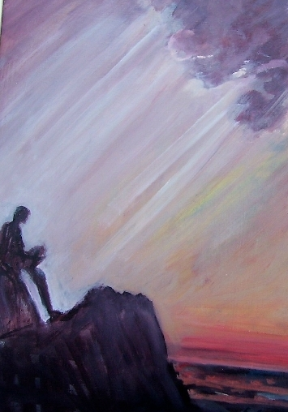

Sobre la obra “Armas del poeta”
de Victoria Servidio (Cosquín, Sierras de Córdoba, Argentina)
| por Graciela María Casartelli (Argentina) |
La existencia y su proceso en el tiempo, lleva al
ser humano a plantearse múltiples dilemas sobre tal acontecer; e igualmente,
en lo
relativo a su inicio y final.
Pero no está solo y esto conlleva además, alternativas sobre las
relaciones personales, sociales y culturales, que constituyen el “piso”
donde, valga la redundancia, transcurre, el transcurrir…
Victoria Servidio, en su obra “Armas del poeta” y otros poemas, los plantea como una “geometría” (1) exacta:
“Geometría de la vida
hipótesis sin afirmar
teorema inconcluso
medida exacta
cálculos errados
figuras que se estrellan”
“Hipótesis”, que analiza en variados aspectos de este “teorema
inconcluso”, que requiere “armas” para sobrevivir,
donde el poeta que
reside en el ser, se atrinchera y protege…:
“afilando palabras…” (2) y
“…se desangra/ y cae/en el abismo/de la hoja en blanco” (3)
Y, la primera defensa esbozada, es una reflexión
contra las injusticias devenidas de las relaciones sociales:
“donde se borran los abrazos/se olvidan los te quiero”
(4), “… ver la esperanza/cautiva en los archivos
devorada…” (5);
las inequidades del “Capital”, donde los “Fariseos ignotos…,
se arrodillan/ante un Dios de metal”,
mientras, “Crece la brecha” y se “licua(n)
los valores” (6) y allí,
“los que nada tienen/sólo/ el infortunio/de nacer descamados”
(7),
“… para el que trabaja/y no le pagan” (8).
Injusticias ante las cuales no debemos claudicar,
porque tal posición nos llevaría la vida misma.
“Cuando”/”no suene más/el clarín de los reclamos/será
hora de pensar/ si no estaremos muertos” (9);
pues seremos víctimas de nosotros mismos: “Inercia
de ver/la propia bestia/sentada/en el espejo” (10)
Habiendo atravesado este andamio,
la autora, enfrenta el propio dolor Dolor ante el “avance/de la muerte/sobre la vida” (11), “y en el final /nos devora la sombra” (12): “No me hablen Ya no hay lugar en esta casa.” (13), y de pérdida de seres queridos, que
perviven en el tiempo (“En los maderos/de mi cruz/los
mantuve vivos”) (14), como luz en |
 Pintura en acrílico de Graciela María Casartelli ("Iluminado") |
Pero, el dilema de la vida y de la muerte adquiere
aquí, importantes dimensiones de preocupación:
“… una pregunta/el porqué/de la llegada y la partida” (17)
“Ellos los ancianos
devoradores de sombra
con sus nostalgias
me llevan
al lugar
de donde nunca partí” (18)
“Campanarios fantasmas
repican sones
se pierden
en un tiempo
que no vuelve” (19)
“La vida
frena la carrera
deja los vestigios
de nuestro andar…
…en el enigma
de donde venimos
”Está el infalible final” (20)
Como así también, remarca el planteo
de la duda sobre la veracidad de los valores y la transitoriedad de los sentimientos
entre
polos opuestos:
“entre lo falso y lo verdadero/entre la nostalgia
y el olvido” (21);
“deshojo el dilema/olvido o recuerdo” (22)
Y en el extremo inverso de esta dialéctica, la vida, regalándonos
su esperanza de renovación constante:
“Vuelvo.
Siempre vuelvo” (23)
“Y me Quedo.
Me Quedo
en el verde
en la raíz milenaria” (24)
“Desafío terreno
de seguir en órbita
alumbrar
el espíritu” (25)
“Tierramadre/pare a cada instante” (26)
“Aroma a carne/ de hombre y mujer…” (27)
Con el triunfo final de la esperanza de seguir adelante,
a pesar de los avatares de la existencia,
como regalo de fe y de futuro:
“Descubro al fin
la aurora
que habita
en cada una de las almas” (28)
“Tu fulgor hirió
a los que tu extinción
vaticinaron
defraudando los presagios
hoy altiva te levantas” (29)
“…Hecha río/voy detrás/de mi próximo
andar” (30);
…“ Otoño…tiempo/de acopiar la cosecha…”
(31);
“…Si no encuentras/la razón de estar vivo/ toma el timón”
(32)
Y la gloria del amor… Motivo final de la existencia… con su compañera
de siempre, la poesía…
“Espero, espero…
un amor que al acecharme
me rescate” (33)
“Poesía…fuerte donde resisto
hasta que el sol
al reiterarse
abre el nuevo día” (34)
“…aunque a nadie le importe-/ hilvano mis versos” (35)
“Ser palabra, palabra/no silencio del infierno/para vivir con la poesía” (36)
. . .
Mail de Victoria: victoriaservidio@yahoo.com.ar
Su espacio en esta Web: http://vidareflexion.iespana.es/victoria-servidio.htm
Nacida en Cosquín, Córdoba,
Argentina, en 1947.
|
Referencias
“Armas del poeta” 1ª ed. -Unquillo: Narvaja Editor, 2008
ISBN 978-987-530-087-3 /1. Poesía Argentina. I. Título CDD A861-
(1)“Geometría de la vida”- pag 57
(2)(op. cit) “Armas del poeta” pag 21
(3) (id) “Dolor del poeta” pag37
(4) “Andares” pag 25
(5) “Qué hacer” pag 27
(6) “Capital” pag 29
(7) “De niños” pag 51
(8) “Tamboril” pag 75
(9) “Hora de pensar” pag 23
(10) “Desvelo” pag 35
(11) “Dolor” pag 31
(12) “Luces y sombras pag 65
(13) “Aluvión” pag 43
(14) “A mis muertos” pag 119
(15) “Volver” pag 115
(16) “Perfil” pag 69
(17) “Duda” pag 123
(18) “Los ancianos” pag 121
(19) “Voces fantasmas” pag 61
(20) “Enigma” pag 125
(21) “Confusión” pag 53
(23) “Vuelvo” pag 33
(24) “Me quedo” pag 47
(25) “Despertar” pag 71
(26) “Tierramadre” pag 73
(27) “Renacer” pag 77
(28) “Soy la noche” pag 87
(29) “Sobreviviente” pag 59
(30) “Fin del estío” pag 109
(31) “Vivir en otoño” pag 111
(32) “Al amigo que está triste” pag 45
(33) “Soledades” pag 41
(34) “A la poesía” pag 55
(35) “Aunque a nadie le importe” pag 63
(36) “Ser palabra” pag 117
. . .
Musicalización: chopin_noct_02.mid